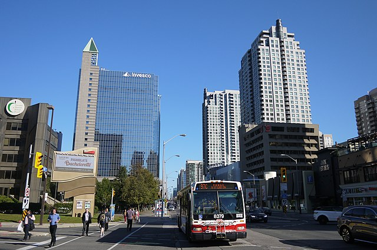

My story begins in Turkey, where I spent my early years surrounded by rich culture and history. I attended an international school in Turkey, which gave me a solid foundation in English. Our family lived in a unique apartment setup, with two units on the eighth floor - my family occupied one unit, while my grandfather lived in the adjacent unit. However, a new opportunity arose when I was in eighth grade, leading my family to embark on a life-changing journey that would take us away from Turkey and start a new chapter in our lives.
The Big Move
Leaving behind the familiar streets of Turkey, we set our sights on Canada, a land of promise and diversity. This transition was like leaping into a vast, unknown galaxy, full of challenges and excitement.
New Horizons: Adapting to Canadian Life
Arriving in Canada was like discovering a new constellation in the night sky - a thrilling and overwhelming experience. As my family and I stepped off the 15-hour flight to Toronto, we were filled with a mix of anxiety and excitement. What struck me immediately was the incredible diversity of the city, with people from all sorts of nationalities and backgrounds. I quickly settled in, making friends and adapting to my new surroundings. Each day brought new experiences, from mastering English to embracing Canadian customs. However, the harsh winters were a challenge, particularly the biting Arctic winds that accompanied the snow. My family and I soon accepted North York, Toronto as our new home.

Downtown North York, a landmark of my new home in Canada
Passions: The Convergence of Numbers and Code
In high school, I discovered my passion for mathematics and programming. I was introduced to Python in 10th grade and although I didn't like it at first, I completed all my lab assignments which gave me a good foundation. In 12th grade, my friends and I played a stock game where we competed to see who could make the most profit in a month. I became very competitive and decided to create my own trading bot using Python. This project helped me develop my programming skills and I learned a lot from it, even though my bot wasn't very successful. This experience led me to pursue a major in financial mathematics and a minor in computer science at TMU.
Looking Ahead: Charting My Course
Now, as a Financial Mathematics major with a Computer Science minor at Toronto Metropolitan University, I'm navigating the intersection of finance and technology. My journey is like a space mission, constantly pushing boundaries and exploring new frontiers.